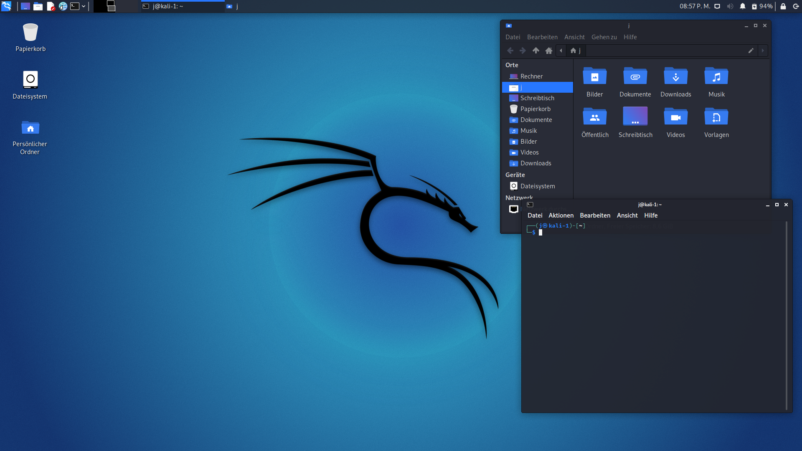

Kali Linux

Kali Linux is the industry-standard distro for penetration testing and security research, maintained by Offensive Security. It ships with over 600 pre-installed security tools covering everything from network scanning to digital forensics, making it the first choice for ethical hackers and security professionals.
Desktop Environment
Xfce (default)
Package Manager
APT
Latest Release
2024.4
Init System
systemd
Support Cycle
Rolling
Architecture
x86_64, ARM, ARM64
Key Features
- 600+ pre-installed penetration testing and security tools
- Live boot and forensics mode, run without installing
- Supports VM, cloud, Docker, and bare metal deployments
- ARM support for Raspberry Pi and other embedded devices
- Kali Undercover mode, disguise the desktop as Windows
- Regular quarterly releases with updated tool packages